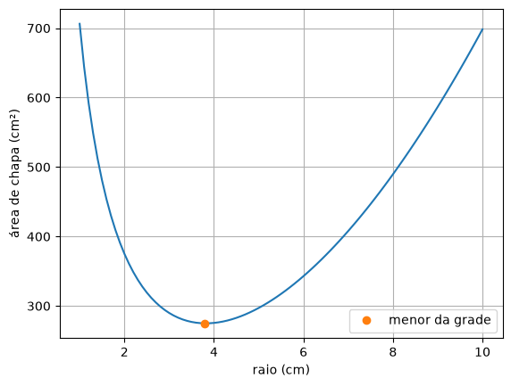
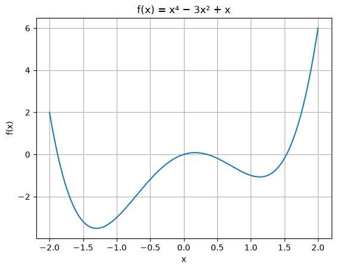

6. Otimização¶
Engenharia é, em boa parte, escolher o melhor: a lata que gasta menos alumínio, o ângulo que joga o peso mais longe, a carga que tira mais potência de uma fonte, o preço que dá mais lucro. Todas essas perguntas pedem o mínimo ou o máximo de uma função.
No topo de um morro ou no fundo de um vale, a curva fica plana por um instante: a derivada vale zero. Otimizar é, então, achar uma raiz da derivada. Este capítulo junta as duas ferramentas que você já tem: as derivadas numéricas do capítulo 2 e o método de Newton do capítulo 5.
Primeiro, uma varredura¶
🌍 Contexto: a lata de refrigerante
Uma lata de 350 mL pode ser alta e fina ou baixa e larga. O volume é o mesmo, mas a quantidade de chapa de alumínio muda. Com bilhões de latas por ano, um centímetro quadrado a menos por lata vira toneladas de alumínio. Com o volume fixo em \(\pi r^2 h = 350\), a altura sai do raio, e a área total de chapa vira uma função só do raio: \(A(r) = 2\pi r^2 + \dfrac{700}{r}\).
O jeito mais simples de achar o mínimo é calcular a função numa grade de
valores e pegar o menor. Para pegar a posição do menor, há um irmão do np.argmax.
🧰 Comando novo: np.argmin
np.argmin(a) devolve a posição do menor elemento do array, como o
np.argmax do capítulo 0 faz com o maior:
# Uma lata cilindrica de 350 mL: que raio gasta menos chapa de aluminio?
# Volume fixo: pi r**2 h = 350 -> h = 350 / (pi r**2)
# Area total: A(r) = 2 pi r**2 + 2 pi r h = 2 pi r**2 + 700 / r
import numpy as np
import matplotlib.pyplot as plt
V = 350.0 # cm³
def area(r):
return 2 * np.pi * r**2 + 2 * V / r
# 1) varredura: calcula a area numa grade de raios e pega o menor
raios = np.linspace(1, 10, 91)
areas = area(raios)
k = np.argmin(areas)
print(f"varredura: raio = {raios[k]:.2f} cm, area = {areas[k]:.2f} cm²")
plt.figure()
plt.plot(raios, areas)
plt.plot(raios[k], areas[k], "o", label="menor da grade")
plt.xlabel("raio (cm)")
plt.ylabel("área de chapa (cm²)")
plt.grid()
plt.legend()
plt.show()

A varredura é robusta (não depende de chute) e mostra a forma da função, mas a precisão dela é a da grade: aqui, 0,1 cm. Para mais casas, seria preciso uma grade mil vezes mais fina. O melhor uso da varredura é dar o ponto de partida para um método rápido.
No quadro: o mínimo é uma raiz da derivada¶
🧑🏫 No quadro — Newton para otimização
1. No mínimo (ou no máximo) de \(f\), a derivada é zero: \(f'(x^*) = 0\). Otimizar \(f\) é achar uma raiz de \(f'\).
2. Newton para achar a raiz de \(g = f'\): \(x_{i+1} = x_i - g(x_i)/g'(x_i)\). Como \(g' = f''\):
3. Sem derivar à mão: as duas derivadas saem das diferenças centrais do capítulo 2,
4. O sinal de \(f''\) no ponto achado diz o que ele é: \(f'' > 0\) é um vale (mínimo), e \(f'' < 0\) é um morro (máximo).
# Refinando o minimo da lata: no minimo, A'(r) = 0. E uma raiz de A',
# e Newton nela usa A'' -- as duas derivadas por diferencas centrais.
import numpy as np
V = 350.0
def area(r):
return 2 * np.pi * r**2 + 2 * V / r
h = 1e-4
r = 3.8 # o chute vem da varredura
print(" it r A'(r)")
for it in range(1, 6):
d1 = (area(r + h) - area(r - h)) / (2 * h)
d2 = (area(r + h) - 2 * area(r) + area(r - h)) / h**2
r = r - d1 / d2
print(f"{it:3d} {r:.10f} {(area(r + h) - area(r - h)) / (2 * h):10.2e}")
altura = V / (np.pi * r**2)
print(f"raio otimo = {r:.4f} cm, altura = {altura:.4f} cm, area = {area(r):.2f} cm²")
print(f"formula exata: r = (V / 2 pi)^(1/3) = {(V / (2 * np.pi))**(1 / 3):.4f} cm")
it r A'(r)
1 3.8190189214 -3.62e-03
2 3.8191149054 -9.12e-08
3 3.8191149078 0.00e+00
4 3.8191149078 0.00e+00
5 3.8191149078 0.00e+00
raio otimo = 3.8191 cm, altura = 7.6382 cm, area = 274.93 cm²
formula exata: r = (V / 2 pi)^(1/3) = 3.8191 cm
Partindo do 3,8 da varredura, três iterações acertam 10 casas. A lata ótima tem altura igual ao diâmetro (\(h = 2r\)). As latas de verdade são mais altas e finas (cerca de 6,6 cm de diâmetro por 12 cm de altura): o fundo e a tampa usam uma chapa mais grossa que a lateral, e a lata precisa caber na mão e na máquina de vendas. O modelo responde à pergunta que foi feita. Se a pergunta muda, o modelo tem de mudar junto.
Quando o ótimo não é o que se queria¶
# Quebre o metodo: f(x) = x**4 - 3x**2 + x tem dois vales e um morro.
# Newton em f' vai para o ponto de f' = 0 mais proximo -- seja ele qual for.
import numpy as np
import matplotlib.pyplot as plt
def f(x):
return x**4 - 3 * x**2 + x
def otimo_newton(f, x):
h = 1e-4
for it in range(30):
d1 = (f(x + h) - f(x - h)) / (2 * h)
d2 = (f(x + h) - 2 * f(x) + f(x - h)) / h**2
x = x - d1 / d2
return x
for chute in [-2.0, 0.1, 2.0]:
x = otimo_newton(f, chute)
h = 1e-4
d2 = (f(x + h) - 2 * f(x) + f(x - h)) / h**2
if d2 > 0:
tipo = "minimo"
else:
tipo = "MAXIMO"
print(f"chute {chute:5.1f} -> x = {x:8.4f}, f(x) = {f(x):8.4f}, f'' = {d2:7.2f} ({tipo})")
xs = np.linspace(-2, 2, 200)
plt.figure()
plt.plot(xs, f(xs))
plt.xlabel("x")
plt.ylabel("f(x)")
plt.title("f(x) = x⁴ − 3x² + x")
plt.grid()
plt.show()
chute -2.0 -> x = -1.3008, f(x) = -3.5139, f'' = 14.31 (minimo)
chute 0.1 -> x = 0.1699, f(x) = 0.0841, f'' = -5.65 (MAXIMO)
chute 2.0 -> x = 1.1309, f(x) = -1.0702, f'' = 9.35 (minimo)

💥 Quebre o método
Newton procura um ponto onde \(f' = 0\), e ele não sabe distinguir fundo de vale de topo de morro. Partindo de \(0{,}1\), ele achou o máximo local. Partindo de \(2\), achou um vale, mas não o mais fundo: o mínimo global está em \(-1{,}30\). As defesas: uma varredura antes, para ver a paisagem e escolher o chute, e o sinal de \(f''\) depois, para conferir o que foi achado.
Confira com a biblioteca¶
🧰 Comando novo: from scipy.optimize import minimize_scalar
minimize_scalar(f, bounds=(a, b), method="bounded") acha o mínimo de f no
intervalo [a, b]. bounds= é o intervalo de busca e method="bounded" avisa
que a busca deve ficar dentro dele. O resultado é um "pacote" com várias
informações: o ponto ótimo fica em resultado.x e o valor mínimo da função, em
resultado.fun. Para achar um máximo, minimize \(-f\).
# Confira com a biblioteca.
import numpy as np
from scipy.optimize import minimize_scalar
V = 350.0
def area(r):
return 2 * np.pi * r**2 + 2 * V / r
resultado = minimize_scalar(area, bounds=(1, 10), method="bounded")
print(f"minimize_scalar: r = {resultado.x:.4f} cm, area = {resultado.fun:.2f} cm²")
Mesmo método, outra área¶
🌍 Contexto: máxima transferência de potência
Toda fonte de energia real (uma bateria, um gerador, a saída de um amplificador) tem uma resistência interna. Ligada a uma carga \(R\), a potência entregue é \(P = V^2 R/(R_f + R)^2\). Com carga muito pequena, quase não há tensão nela; com carga muito grande, quase não passa corrente. Em algum ponto do meio, a potência é máxima. É por isso que antenas, cabos coaxiais e alto-falantes são projetados com impedâncias "casadas" (50 Ω, 75 Ω, 8 Ω).
# Mesmo metodo, outra area: maxima transferencia de potencia.
# Uma fonte de 12 V com resistencia interna de 50 ohm alimenta uma carga R.
# Que R recebe a maior potencia? Maximizar P e minimizar -P.
import numpy as np
V = 12.0
R_fonte = 50.0
def potencia(R):
return V**2 * R / (R_fonte + R)**2
def menos_potencia(R):
return -potencia(R)
cargas = np.linspace(1, 300, 300) # varredura
k = np.argmin(menos_potencia(cargas))
R = cargas[k]
h = 1e-4
for it in range(8): # Newton em P'(R) = 0
d1 = (menos_potencia(R + h) - menos_potencia(R - h)) / (2 * h)
d2 = (menos_potencia(R + h) - 2 * menos_potencia(R) + menos_potencia(R - h)) / h**2
R = R - d1 / d2
print(f"carga otima: R = {R:.4f} ohm, potencia = {potencia(R):.4f} W")
O código é o mesmo da lata: varredura para o chute e Newton em \(f'\). Como o problema é de máximo, minimiza-se \(-P\). A resposta, \(R = R_f\), é o teorema da máxima transferência de potência que os livros de circuitos demonstram por derivada.
Erros comuns deste capítulo¶
| Sintoma | Causa provável |
|---|---|
| o "ótimo" achado é pior que outros pontos do gráfico | Newton achou um máximo, ou um mínimo local: faça a varredura antes e confira \(f''\) |
o resultado oscila ou dá nan |
\(h\) pequeno demais na segunda derivada (\(h^2\) no denominador): use \(h \approx 10^{-4}\) |
np.argmin deu um número pequeno e sem sentido |
ele devolve a posição; o valor está em grade[k] |
| o mínimo sai exatamente na ponta da grade | o ótimo está fora do intervalo varrido: aumente a grade |
| o máximo não aparece | minimizou \(f\) em vez de \(-f\) (ou o contrário) |
Onde isso é usado de verdade¶
- Aprendizado de máquina: treinar uma rede neural é minimizar uma função de erro com milhões de variáveis. Os métodos são parentes do que está aqui (gradiente, Newton aproximado).
- Engenharia de produto: formato de latas, garrafas e embalagens, espessura de peças, perfil de asas: tudo sai de otimização com restrições.
- Telecomunicações: posição de antenas, potência de cada transmissor para cobrir uma região gastando o mínimo de energia, casamento de impedâncias.
- Economia e logística: preço que maximiza o lucro, rota que minimiza o combustível, estoque que minimiza o custo.
- Esporte: ângulo de saída, cadência de pedalada, estratégia de ritmo numa maratona.
Resumo¶
- Mínimo e máximo são pontos onde \(f'(x) = 0\): otimizar é achar uma raiz da derivada.
- Uma varredura numa grade dá a forma da função e um bom chute.
- Newton para otimização: \(x_{i+1} = x_i - f'(x_i)/f''(x_i)\), com as duas derivadas pelas diferenças centrais.
- O sinal de \(f''\) diz se o ponto é mínimo (\(f'' > 0\)) ou máximo (\(f'' < 0\)). Newton não distingue os dois, nem mínimo local de global.
- Para um máximo, minimize \(-f\).
Para praticar¶
A Lista 06 tem uma otimização à mão (✏️), o preço que maximiza o lucro, a janela que deixa entrar mais luz e a velocidade de voo que gasta menos combustível.